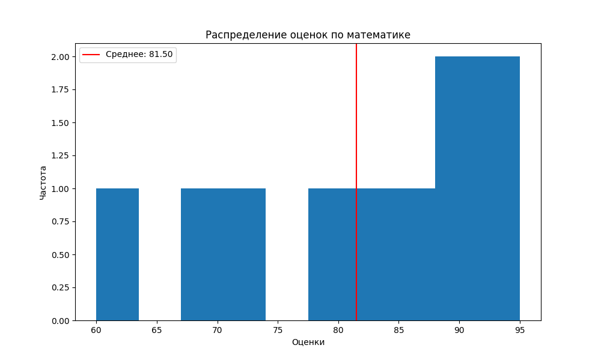
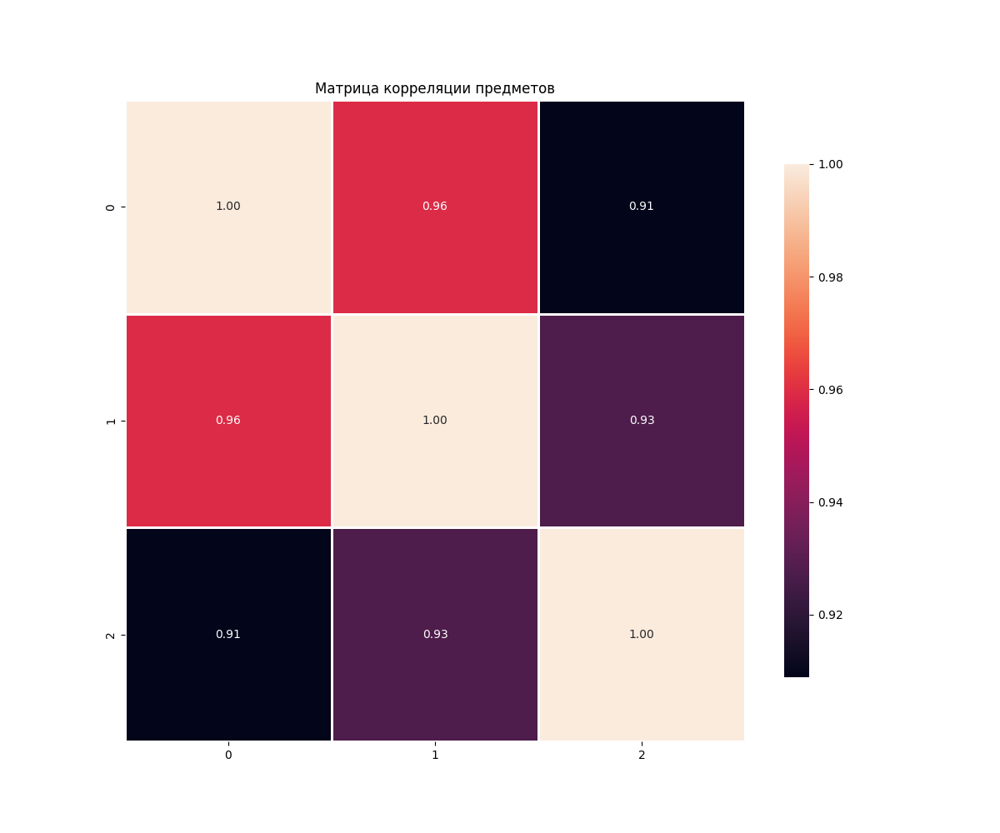
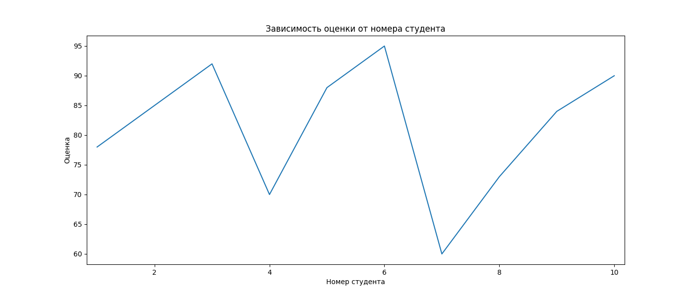

Лабораторная работа 2
Тема: Основы NumPy: массивы и векторные операции
1. Цель работы
Научиться использовать библиотеку NumPy для численных вычислений, статистического анализа и визуализации данных.
2. Описание задачи
Реализовать набор функций для численных вычислений с NumPy на основе данных об успеваемости студентов.
Данные: CSV-файл с оценками 10 студентов по математике, физике и информатике.
Необходимо реализовать:
- Создание и преобразование массивов
- Векторные и матричные операции
- Статистический анализ (среднее, медиана, std, перцентили)
- Нормализацию данных
- Визуализацию (гистограммы, тепловая карта, линейные графики)
Требования: прохождение 17 тестов, PEP-8, docstring, обработка ошибок.
3. Ход выполнения
3.1 Подготовка окружения
# Создание виртуального окружения
python -m venv numpy_env
# Активация (Windows)
numpy_env\Scripts\activate
# Установка библиотек
pip install numpy matplotlib seaborn pandas pytest
3.2 Создание структуры проекта
numpy_lab/
├── main.py # Основной код
├── test.py # Тесты
├── data/ # Папка с данными
│ └── students_scores.csv
└── plots/ # Папка для графиков
3.3 Реализация функций
Создание и обработка массивов
def create_vector():
return np.arange(10)
def create_matrix():
return np.random.rand(5, 5)
def reshape_vector(vec):
return vec.reshape(2, 5)
def transpose_matrix(mat):
return mat.T
Векторные операции
def vector_add(a, b):
return a + b
def scalar_multiply(vec, scalar):
return vec * scalar
def dot_product(a, b):
return np.dot(a, b)
Матричные операции
def matrix_multiply(a, b):
return a @ b
def matrix_determinant(a):
return np.linalg.det(a)
def matrix_inverse(a):
return np.linalg.inv(a)
def solve_linear_system(a, b):
return np.linalg.solve(a, b)
Статистический анализ
def load_dataset(path):
return pd.read_csv(path).to_numpy()
def statistical_analysis(data):
return {
'mean': np.mean(data),
'median': np.median(data),
'std': np.std(data),
'min': np.min(data),
'max': np.max(data),
'25_percentile': np.percentile(data, 25),
'75_percentile': np.percentile(data, 75)
}
def normalize_data(data):
return (data - np.min(data)) / (np.max(data) - np.min(data))
Визуализация
def plot_histogram(data):
plt.figure()
plt.hist(data, bins=10)
plt.title("Гистограмма оценок")
plt.savefig('plots/math_scores_histogram.png')
plt.close()
def plot_heatmap(matrix):
plt.figure()
sns.heatmap(matrix, annot=True)
plt.title("Корреляция предметов")
plt.savefig('plots/correlation_heatmap.png')
plt.close()
def plot_line(x, y):
plt.figure()
plt.plot(x, y)
plt.title("Оценки студентов")
plt.savefig('plots/student_scores.png')
plt.close()
3.4 Тестирование
python3 -m pytest test.py -v
4. Трудности в ходе выполнения
4.1 Проблемы с размерностями массивов
При выполнении операций сложения, умножения и скалярного произведения возникали ошибки из-за несовпадения размерностей массивов.
Решение:
if a.shape != b.shape:
raise ValueError(f"Векторы должны быть одинаковой формы: {a.shape} vs {b.shape}")
4.2 Вырожденные матрицы
При попытке найти обратную матрицу для вырожденной матрицы (определитель = 0) возникала ошибка
Решение:
det = np.linalg.det(a)
if np.abs(det) < 1e-10:
raise ValueError(f"Матрица вырождена (определитель = {det:.2e}). Обратной матрицы не существует.")
4.3 Неквадратные матрицы
Функции matrix_determinant() и matrix_inverse() вызывались для неквадратных матриц.
Решение:
if a.shape[0] != a.shape[1]:
raise ValueError(f"Матрица должна быть квадратной, получена форма {a.shape}")
4.4 Деление на ноль при нормализации
Если все значения в массиве одинаковые, то max - min = 0, что приводит к делению на ноль.
Решение:
if np.abs(max_val - min_val) < 1e-10:
raise ValueError(f"Невозможно нормализовать: все значения одинаковы")
4.5 Пустые массивы
Функции статистического анализа вызывались для пустых массивов.
Решение:
if data.size == 0:
raise ValueError("Массив данных пустой")
4.6 Несовместимые матрицы для умножения
Умножение матриц требует, чтобы количество столбцов первой матрицы равнялось количеству строк второй.
Решение:
if a.shape[1] != b.shape[0]:
raise ValueError(f"Несовместимые размерности для умножения: {a.shape} и {b.shape}")
5. Выводы
-
Освоены базовые операции NumPy с массивами
-
Освоена работы с матричными вычислениями
-
Освоена работа с графиками и их построением с помощью matplotlib и seaborn
6. Графики
Гистограмма распределения оценок по математике

Тепловая карта корреляции предметов

График зависимости оценок по математике

7. Тесты